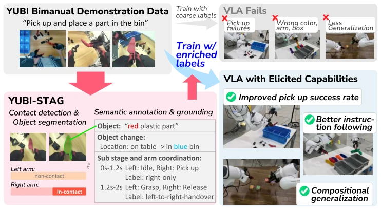
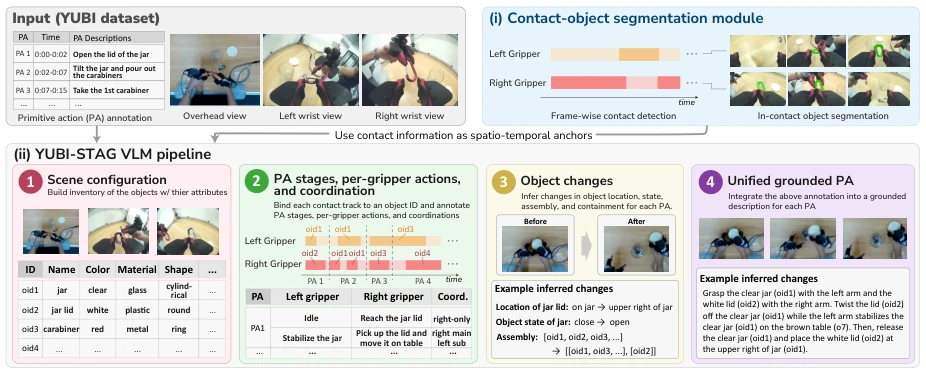
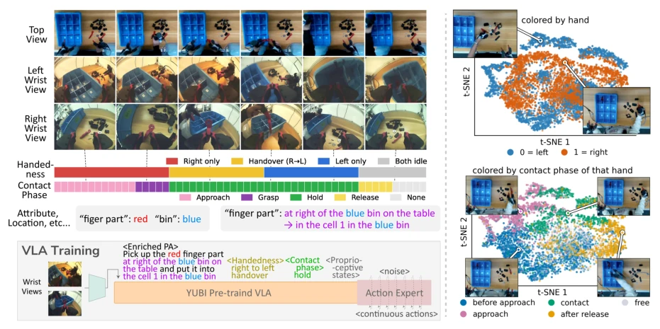
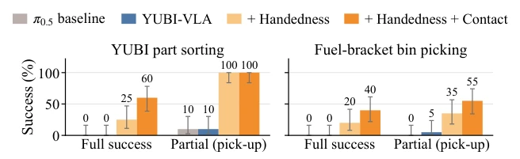
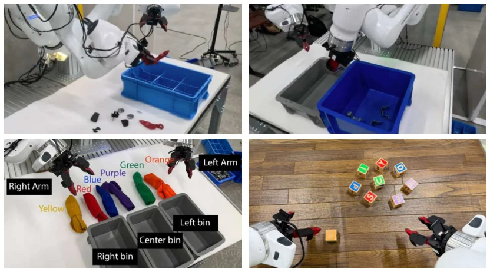
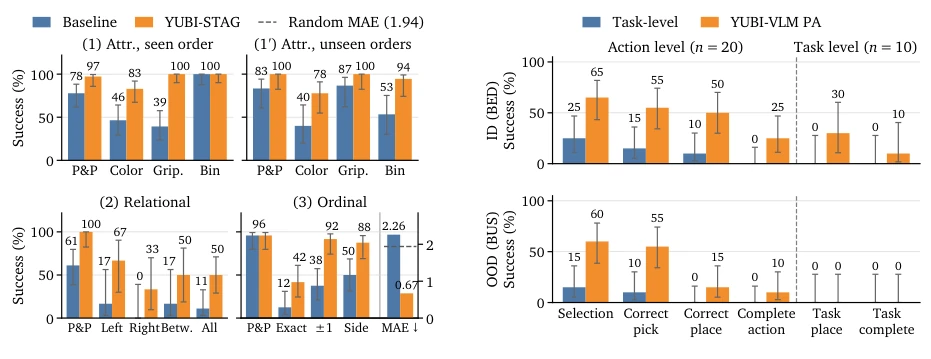
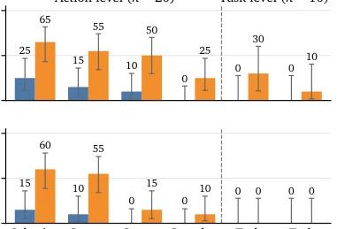

This paper delivers a 'strong stimulant' to VLA models, though the dosage is quite potent. The authors keenly point out that existing VLA training is like asking a learned professor to only read shallow instructions like "pick up the cup", completely wasting the physical common sense learned during pre-training. YUBI-STAG attempts to use automated means to dig out all such details from videos like "who touched whom and how", forcing them into the model. This idea is very appealing, after all, "contact" is the core of manipulation. However, the criticisms are also apparent: this pipeline relies on complex staged reasoning; although distilled into YUBI-VLM, it essentially outsources the "dirty work" of "annotation" to larger multimodal models, meaning computational costs may not necessarily be low. Moreover, will this excessive fixation on "contact" cause the model to become an obsessive-compulsive entity that only "picks at details", thereby neglecting macro-level task planning? Nevertheless, achieving contact detection relying solely on vision without tactile sensors is indeed impressive, certainly superior to baselines that merely guess actions.
研究动机Motivation
当前Vision-Language-Action (VLA) 模型虽然通过大规模预训练获得了广泛的操控能力，但在通过语言指令微调（post-training）时，面临严重的“对齐”瓶颈。现有的机器人演示数据通常只包含粗粒度的任务级标签（如“把零件放入盒子”），完全缺失了执行层面的细粒度信息，例如具体是哪个夹爪（gripper）在动作、接触了哪个物体、以及具体的抓取和移动方式。这种粗监督导致模型无法习得精细的时空动态，如夹爪-物体接触转换、抓取 affordance 和双手协调。相关工作中，虽然有一些尝试通过语言描述执行细节（如Xiao et al., 2023; Hu et al., 2026）或在图像坐标中 grounding 动作（如Zawalski et al., 2024），但缺乏能同时恢复“哪个夹爪在何时何地接触哪个物体”并据此对齐预训练VLA能力的统一框架。此外，现有的接触检测多依赖夹爪开合度等本体感知，缺乏触觉传感器时往往失效，无法覆盖非抓取类的接触（如支撑、稳定）。
Although current Vision-Language-Action (VLA) models have acquired extensive manipulation capabilities through large-scale pre-training, they face a severe 'alignment' bottleneck during post-training via language instructions. Existing robot demonstration data typically contains only coarse-grained task-level labels (e.g., "put the part into the box"), completely lacking fine-grained information at the execution level, such as which specific gripper is acting, which object is contacted, and the specific grasping and movement methods. This coarse supervision prevents the model from learning fine spatiotemporal dynamics, such as gripper-object contact transitions, grasping affordance, and bimanual coordination. In related work, while some attempts have been made to describe execution details via language (e.g., Xiao et al., 2023; Hu et al., 2026) or ground actions in image coordinates (e.g., Zawalski et al., 2024), there is a lack of a unified framework capable of simultaneously recovering 'which gripper contacts which object at what time and where' to align pre-trained VLA capabilities accordingly. Furthermore, existing contact detection mostly relies on proprioception such as gripper opening/closing; it often fails without tactile sensors and cannot cover non-grasping contacts (e.g., support, stabilization).

Figure 1 | From a bimanual demonstration carrying only a coarse task label such as “pick and place a part,” YUBI- STAG recovers contact-anchored annotations of object identity, per-gripper action, bimanual coordination, and object change, which post-training uses to align the pretrained capabilities of a VLA with fine-grained manipulation language.
The paper proposes the YUBI-STAG framework, aiming to enrich the semantics of manipulation demonstrations through automated Video-Language Grounding. The overall process is divided into two stages: first, the YUBI-STAG multi-stage annotation pipeline, followed by the distilled YUBI-VLM. The core of YUBI-STAG lies in utilizing contact information as spatiotemporal anchors. The first step is the Contact-Object Segmentation module, which utilizes frozen DINOv2-L to encode dual-wrist views, predicts contact states and pixel-level masks of contacted objects via a lightweight temporal Transformer, and addresses the lack of tactile data using pseudo-labels and self-training. The second step is the VLM-driven annotation pipeline, conducted in four steps: 1) Scene Configuration: establish an object list (ID, attributes); 2) Action Phase and Coordination: bind contact trajectories to object IDs, refine original PA (Primitive Action) into specific phases, and identify bimanual coordination patterns; 3) Object State Change: infer changes in position, state, and assembly relationships before and after contact; 4) Unified Annotation: generate PA descriptions containing spatiotemporal information. To reduce the cost of multi-stage reasoning and adapt to portable data collection, the authors distilled the aforementioned capabilities into YUBI-VLM. This model is fine-tuned based on Qwen3.6-27B, directly processes raw, unsegmented wrist videos, and outputs structured annotations containing contact intervals, object IDs, action phases, and coordination relationships without requiring predefined PA boundaries.

Figure 2 | Overview of YUBI-STAG. The contact-object segmentation module extracts contact tracks—contact intervals with per-frame object masks—as spatio-temporal anchors for four annotation stages: scene configuration, PA stages and gripper coordination, object changes, and grounded PA descriptions.

Figure 3 | Contact- and semantic-rich post-training for YUBI-VLA. Left: YUBI-STAG augments primitive- action instructions with task-relevant object attributes and locations, together with time-varying handedness and contact-phase labels while the unchanged flow-matching expert learns continuous bimanual actions. Right: t-SNE projections of per-hand delta actions after PCA-50 reduction, colored by hand identity and contact phase, reveal handedness and contact-phase structure in the trajectories and motivate the proposed labels.
The authors evaluated annotation quality on their self-built benchmark YUBI-STAG-Bench, which comprises 10 tasks and 100 demonstrations, covering 10 tasks such as contact detection and semantic annotation. Results indicate that YUBI-VLM, while maintaining YUBI-STAG's high accuracy, improved inference speed by 3.5-3.7 times and reduced request count by 4.5 times, significantly outperforming large model baselines such as RoboFine-VLM. In VLA policy fine-tuning experiments, the π0.5 policy was post-trained using fine-grained annotations generated by YUBI-STAG (including gripper side, contact phase, object attributes). In bimanual instruction following tasks, introducing contact supervision increased the success rate of the 'part sorting' task from 0% to 60%, and 'fuel bracket sorting' to 40%. In language controllability tests, the model precisely responded to color, gripper selection, and spatial relationship instructions, and could even handle unseen sorting logic. Furthermore, utilizing PA generated by YUBI-VLM for action composition achieved task-level success in unseen tasks that baselines could not complete.

Figure 4 | Fine-grained manipulation results over 20 trials per condition. Bars show success rates with 95% Wilson score confidence intervals. Full success completes both picking and placement; partial success indicates successful pick-up.

Figure 5 | Experimental setup for robot evaluation tasks.

Figure 6 | Fine-grained language steerability. Baseline (blue) and YUBI-STAG (orange) success rates with 95% Wilson confidence intervals. P&P in (3) does not measure instruction following because any sock may be grasped. MAE: ordinal position error (right axis, lower is better), compared with uniform random selection (dashed line). Attr.: attribute; Grip.: gripper; Betw.: between.

Figure 7 | Letter-block action composition on BED (ID) and BUS (OOD). Bars compare the task-level baseline (blue) and YUBI-VLM PA supervision (orange) with 95% Wilson score confidence intervals. Action metrics (n = 20) are cumulative; task place and task complete require both actions to succeed through placement and orientation, respectively (n = 10).